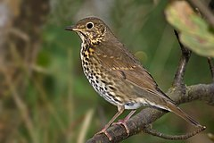
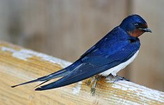
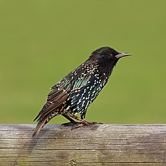

Gatunek średniej wielkości ptaka z rodziny drozdowatych, zamieszkującego Eurazję.
Wierzch ciała brązowy o ciepłym odcieniu, kuper i pokrywy nadogonowe oliwkowe, ogon i wierzch głowy
pomarańczowobrązowe. Spód ciała kremowy z gęstymi brązowymi plamkami.
Do jego charakterystycznej piosenki, w której powtarza muzyczne frazy,
często odnoszono się w poezji.

Gil
Gatunek małego ptaka z rodziny łuszczakowatych, zamieszkujący Eurazję. Nie jest zagrożony
Jaskółka
Jaskółka dymówka – gatunek niewielkiego ptaka wędrownego

Szpak
Gatunek średniej wielkości ptaka z rodziny szpakowatych. Częściowo wędrowny.
Pierwotnie zamieszkiwał wyłącznie Eurazję. Nie jest zagrożony wyginięciem.
Jest to gatunek inwazyjny.

Wilga
Gatunek średniej wielkości ptaka wędrownego z rodziny wilgowatych, jedyny z tej
rodziny rozmnażający się w północnej strefie umiarkowanej. Nie jest zagrożony wyginięciem